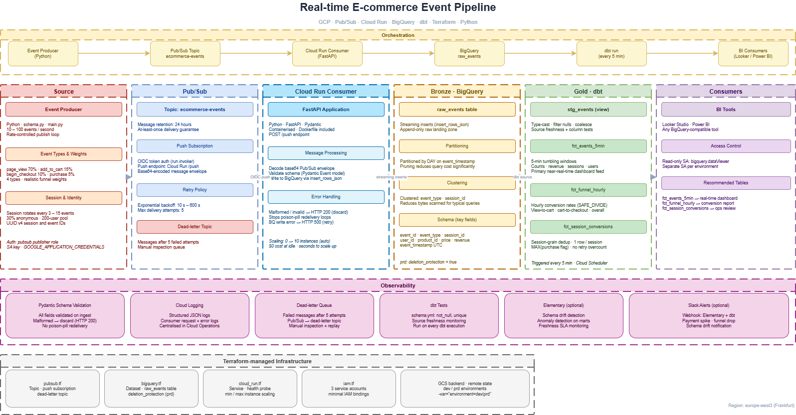

Real-time E-commerce Event Pipeline
| Type | Portfolio project, fully reproducible and open source |
| Stack | GCP (Pub/Sub, Cloud Run, BigQuery), dbt, Terraform, Python (FastAPI, Pydantic) |
| Source | github.com/tobial93/streaming-ecommerce-pipeline → |

The Problem
Most e-commerce analytics pipelines are batch: orders land in a database, a nightly job loads them into a warehouse, and the dashboard reflects yesterday's reality. That works until you need to catch a payment failure surge at 11 PM, act on a spike in cart abandonments before a flash sale ends, or measure the real conversion impact of a real-time promotion.
This project demonstrates a streaming alternative: events flow from the frontend into BigQuery within seconds, and aggregated metrics refresh every five minutes via dbt.
Architecture
The pipeline has three layers: ingestion, storage, and transformation.
Ingestion
A Python producer generates synthetic clickstream events at configurable throughput (10-100 events/second) and publishes them to a Pub/Sub topic. Four event types follow realistic funnel weights: page_view (70%), add_to_cart (15%), begin_checkout (10%), purchase (5%). Sessions rotate after a random number of events to simulate real browsing behaviour; 30% of sessions are anonymous.
Pub/Sub delivers messages via a push subscription to the Cloud Run consumer, authenticated with OIDC tokens. A dead-letter topic receives messages that fail five consecutive delivery attempts.
Consumer
The Cloud Run service is a FastAPI application. Each push delivery is a base64-encoded Pub/Sub message; the consumer decodes it, validates it with a Pydantic model, and writes to BigQuery. Two failure modes are handled differently:
- Malformed or invalid messages return HTTP 200 (acknowledged and discarded) to prevent poison-pill redelivery loops.
- Transient BigQuery errors return HTTP 500 so Pub/Sub retries with exponential backoff.
Cloud Run scales from 0 to 10 instances automatically. At low throughput it costs nothing; at high throughput it scales within seconds.
Storage
The BigQuery raw_events table is partitioned by day on event_timestamp and clustered on event_type and session_id. Partition pruning and clustering together reduce bytes scanned significantly for the common query patterns (time-range + event type filters).
dbt Transformation Layer
Three mart models run on a 5-minute Cloud Scheduler trigger:
- fct_events_5min: 5-minute tumbling window aggregates covering event counts, revenue, unique sessions and users per event type and category. The primary feed for near-real-time dashboards.
- fct_funnel_hourly: Hourly conversion funnel with step-by-step rates: view-to-cart, cart-to-checkout, checkout-to-purchase, and overall conversion. Uses
SAFE_DIVIDEthroughout to avoid division-by-zero errors on sparse hours. - fct_session_conversions: Session-grain conversion analysis. One row per session, not per order.
Session-grain Conversion Deduplication
Counting purchases per WooCommerce order overstates conversions. A customer whose payment is declined and retried three times produces three orders but one conversion. The same problem appears in subscription billing systems, and the same fix applies: group events by session before counting.
fct_session_conversions groups by session_id and takes MAX(CASE WHEN event_type = 'purchase' THEN 1 ELSE 0 END) — one binary flag per session, regardless of how many order events it contains.
Infrastructure
Everything is Terraform-managed with dev and prd environments sharing the same module configuration. Key resources:
- Pub/Sub topic and push subscription with dead-letter policy and exponential backoff retry
- Cloud Run service with startup health probe, resource limits, and min/max instance scaling
- BigQuery dataset and
raw_eventstable with deletion protection enabled in prd - Three service accounts with minimal IAM bindings: producer (pubsub.publisher), consumer (bigquery.dataEditor + bigquery.jobUser), Pub/Sub invoker (run.invoker)
- GCS backend for remote Terraform state
Production Enhancements
- Replace streaming inserts with the BigQuery Storage Write API committed stream for exactly-once delivery guarantees
- Add Elementary with Slack webhook for schema drift and freshness alerts on the dbt layer
- Add Artifact Registry to Terraform for versioned consumer image management
- Extend the producer to replay historical event logs for backfill scenarios